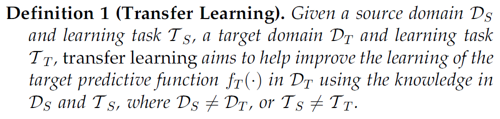
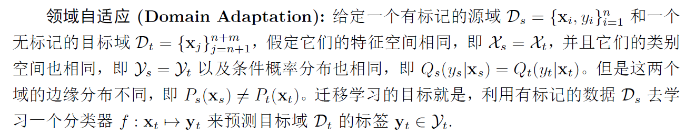
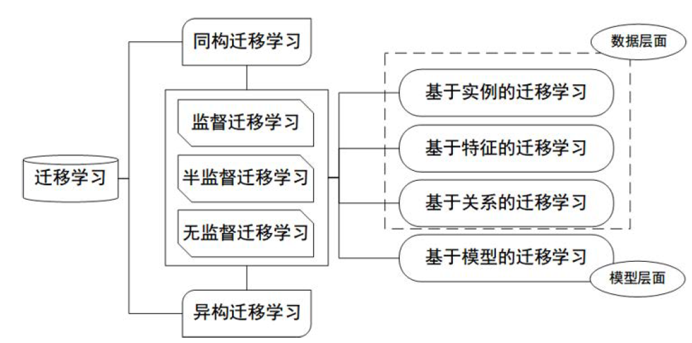

迁移学习概述：
最近开始学习迁移学习，主要还是由于在想从迁移学习中再获得一些启发来指导研究少样本学习的一些概念。
迁移学习主要解决的问题是通过预训练好的模型，用于其他任务的一类问题。总之，在我看来，迁移学习实际上是解决一类问题的。通俗来说就是使用从解决一个问题中获得的知识来解决一个不同的但是相关的问题。
此外，迁移学习实际上做的是一类问题，可见最后给出的知识框图，给出了迁移学习领域所有问题的一个说明。
数学符号：
先了解下迁移学习定义所使用的符号： $\mathcal{D}$ 领域(domain)，包含两部分：参数空间 $ \mathcal{X} $ 和边缘概率分布 $P(X)$ 组成，其中 $X=\left\{x_{1}, \ldots, x_{n}\right\} \in \mathcal{X}$ , $X$表示领域中的所有数据，也就是表示在 $X$ 中的第 $x_{i}$ 的样本数据都属于参数空间中。
通常来说两个不同的domain，他们有不同的特征空间和不同的边缘概率分布。给定一个特定的domain，$\mathcal{D}=\{\mathcal{X}, P(X)\}$ ，一个任务 $\mathcal{T}$ 可以分为两个部分，标签空间 $\mathcal{Y}$ 和目标函数 $f(.)$ 。目标函数 $f(.)$ 对于x的预测，我们将 $f(.)$ 改写成 $f(x)$。 在迁移学习中，对数据集我们将其分为source dataset $D_{s}= \left\{({x_{S_{1}}},{y_{S_{1}}}),({x_{S_{2}}},{y_{s_{2}}}),({X_{s_{3}}},{Y_{s_{3}}})\right\} $ 和target dataset $D_{t}=\left\{\left\{x_{T_{1}},y_{T_{1}}\right\},\left\{x_{T_{2}},y_{T_{2}}\right\},\left\{x_{T_{n}},y_{T_{n}}\right\}\right\}$ 。表示在source dataset中，每一个在S1 中的x对应着一个label-y in S1。 而target 同样如此。通常情况下，$n_{T}<<n_{S}$ 。
数学定义：
用数学对迁移学习做定义如下：
其中最后一项都相等的话，那就是机器学习的研究。因此迁移学习实际上是对机器学习的一个扩展。其研究的范围非常广。
对定义做详细说明：
- 当 $\mathcal{D}_{S} \neq \mathcal{D}_{T}$ ，$\mathcal{T}_{S}=\mathcal{T}_{T}$ 时，此类迁移学习问题是领域上的不同，可以来自：1. 两个domain的X特征空间不一样；or 2. 两个domain的边缘概率分布不一样。
- 当 $\mathcal{D}_{S} = \mathcal{D}_{T}$，$\mathcal{T}_{S} \neq \mathcal{T}_{T}$ 时，此类迁移学习问题是在任务上的不同，可以来自：1. 两个task的 $Y$的特征空间不一样；or 2. 两个task的条件概率不一样 $P_{S}(y|x) \neq P_{T}(y|x)$
在论文中，以文本分类为例，分别对上面的两种情况举了两个例子：
case 1 corresponds to when the two sets of documents are described in different languages, and case 2 may correspond to when the source domain documents and the targetdomain documents focus on different topics. （当 $\mathcal{D}_{S} \neq \mathcal{D}_{T}$ ，$\mathcal{T}_{S}=\mathcal{T}_{T}$ 时）
case 1 corresponds to the situation where source domain has binary document classes, whereas the target domain has 10 classes to classify the documents to. Case 2 corresponds to the situation where the source and target documents are very unbalanced in terms of the userdefined classes. 当 $\mathcal{D}_{S} = \mathcal{D}_{T}$，$\mathcal{T}_{S} \neq \mathcal{T}_{T}$ 时
根据此，还可以引入另一个非常热的方向：领域自适应问题实际上解决的是两个特征空间相同的数据集边缘分布不同(正常的数据集应该是独立同分布的)，用现有的数据去学习一个function来预测label的准确性。
迁移学习的研究领域：
迁移学习的分类
Different Settings of Transfer Learning


深度迁移学习的实现——finetune
NIPS2014的一篇文章成功地将迁移学习引入到CNN卷积神经网络中，使用了大量地实验告诉我们AlexNet实际是如何对图像进行特征提取的。在了解了迁移学习的方式，通过对其中层中的参数进行调整，就可以得到更好的结果。
现在用于计算机视觉的finetune已经可以在很大程度上使得结果变得更好：可以参见 斯坦福CS231_transfer-learning_toturial
用pytorch上的一个例子来学习下迁移学习具体的实现方式。对迁移学习最主要的理解就是通过在大型的数据集上进行训练得到一个网络结构，重置其中的参数，经过微调用来满足在其他数据集上的学习。
接下来看代码：一个二分类问题，想训练一个resnet18，train_model是方便后面直接调用模型来train CNN这个model。需要输入的参数有model，criterion判别，optimizer优化器，epochs。
def train_model(model, criterion, optimizer, scheduler, num_epochs=25):
since = time.time()
best_model_wts = copy.deepcopy(model.state_dict())
best_acc = 0.0
for epoch in range(num_epochs):
print('Epoch {}/{}'.format(epoch, num_epochs - 1))
print('-' * 10)
# Each epoch has a training and validation phase
for phase in ['train', 'val']:
if phase == 'train':
model.train() # Set model to training mode
else:
model.eval() # Set model to evaluate mode
running_loss = 0.0
running_corrects = 0
# Iterate over data.
for inputs, labels in dataloaders[phase]:
inputs = inputs.to(device)
labels = labels.to(device)
# zero the parameter gradients
optimizer.zero_grad()
# forward
# track history if only in train
with torch.set_grad_enabled(phase == 'train'):
outputs = model(inputs)
_, preds = torch.max(outputs, 1)
loss = criterion(outputs, labels)
# backward + optimize only if in training phase
if phase == 'train':
loss.backward()
optimizer.step()
# statistics
running_loss += loss.item() * inputs.size(0)
running_corrects += torch.sum(preds == labels.data)
if phase == 'train':
scheduler.step()
epoch_loss = running_loss / dataset_sizes[phase]
epoch_acc = running_corrects.double() / dataset_sizes[phase]
print('{} Loss: {:.4f} Acc: {:.4f}'.format(
phase, epoch_loss, epoch_acc))
# deep copy the model
if phase == 'val' and epoch_acc > best_acc:
best_acc = epoch_acc
best_model_wts = copy.deepcopy(model.state_dict())
print()
time_elapsed = time.time() - since
print('Training complete in {:.0f}m {:.0f}s'.format(
time_elapsed // 60, time_elapsed % 60))
print('Best val Acc: {:4f}'.format(best_acc))
# load best model weights
model.load_state_dict(best_model_wts)
return modelFinetuning the convnet
Load a pretrained model and reset final fully connected layer.
model_ft = models.resnet18(pretrained=True)
num_ftrs = model_ft.fc.in_features
# Here the size of each output sample is set to 2.
# Alternatively, it can be generalized to nn.Linear(num_ftrs, len(class_names)).
model_ft.fc = nn.Linear(num_ftrs, 2)
model_ft = model_ft.to(device)
criterion = nn.CrossEntropyLoss()
# Observe that all parameters are being optimized
optimizer_ft = optim.SGD(model_ft.parameters(), lr=0.001, momentum=0.9)
# Decay LR by a factor of 0.1 every 7 epochs
exp_lr_scheduler = lr_scheduler.StepLR(optimizer_ft, step_size=7, gamma=0.1)model_ft = train_model(model_ft, criterion, optimizer_ft, exp_lr_scheduler,
num_epochs=25)model_conv是finetune的网络结构，单独设置了全连接层，最后输出两个label出来。在训练的过程中，conv层和fc层都会发生参数更新，等于在resneet18的参数基础上训练了整个网络，参数不是从初始开始更新的。
ConvNet as fixed feature extractor
Here, we need to freeze all the network except the final layer.
训练的时候model_conv是不会发生变化的，只是fc层会发生变化。只训练了fc层的参数，conv层作为提取器不发生任何变化。
model_conv = torchvision.models.resnet18(pretrained=True)
for param in model_conv.parameters():
param.requires_grad = False
# Parameters of newly constructed modules have requires_grad=True by default
num_ftrs = model_conv.fc.in_features
model_conv.fc = nn.Linear(num_ftrs, 2)
model_conv = model_conv.to(device)
criterion = nn.CrossEntropyLoss()
# Observe that only parameters of final layer are being optimized as
# opposed to before.
optimizer_conv = optim.SGD(model_conv.fc.parameters(), lr=0.001, momentum=0.9)
# Decay LR by a factor of 0.1 every 7 epochs
exp_lr_scheduler = lr_scheduler.StepLR(optimizer_conv, step_size=7, gamma=0.1)model_conv = train_model(model_conv, criterion, optimizer_conv,
exp_lr_scheduler, num_epochs=25)最终结果是fc层的结果更精确，更快速。